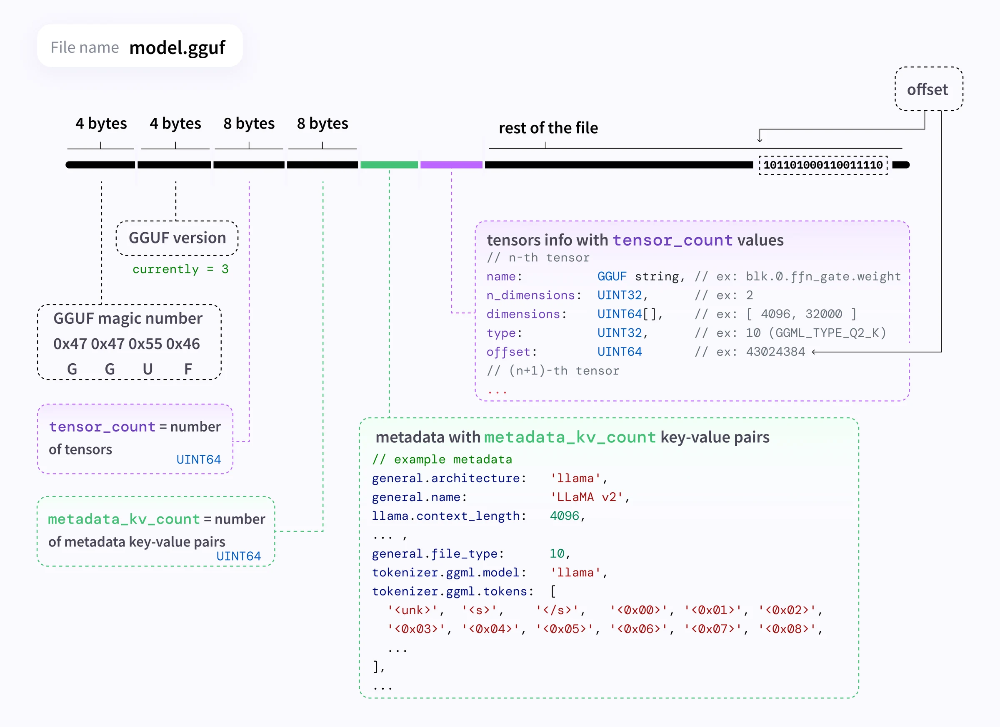
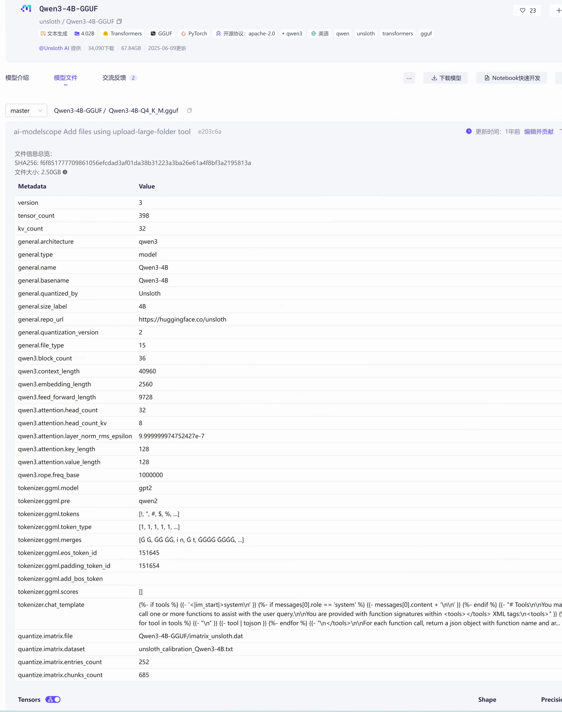
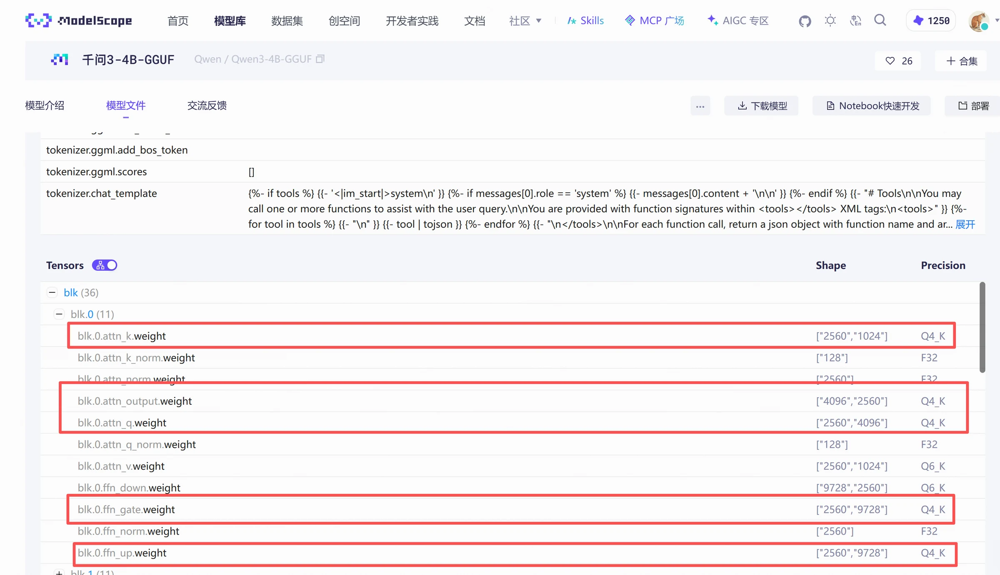

模型下载好了，运行时却提示内存/显存不足，这大概是很多人尝试本地模型时最不想看到的结果。
前面介绍过，模型运行时需要把权重加载到内存或显存中，生成回答还要占用额外的空间。如果手头的设备装不下模型，除了换一个参数量更小的模型，还可以看看有没有量化版本。
模型的权重由大量数值组成，保存每个数值都需要一定的空间。量化（Quantization）通过降低这些数值的表示精度，减少模型的资源占用。例如，将原本以16 bit浮点数保存的权重，转换为以8 bit或4 bit为主的低精度表示。参数数量通常没有变，每个参数占用的空间变小了。
以一个70亿参数的模型为例，只计算权重本身，忽略量化附加信息，可以得到下面这组粗略估算。
权重表示方式 | 理论权重大小 |
16 bit | 约14 GB |
8 bit | 约7 GB |
4 bit | 约3.5 GB |
这里的GB按十进制计算，实际量化文件还会保存缩放系数等信息，也可能混用不同精度，因此大小会与估算有差异。
对普通用户来说，量化最直接的好处是模型文件更小，下载和存储更省空间，运行时权重占用的内存或显存也更少。在硬件和推理框架支持合适的情况下，量化还可能提升推理速度。
不过，文件缩小到原来的四分之一，并不意味着回答速度也会提高四倍。
降低精度也可能影响回答质量，具体影响取决于模型、量化方法和任务。选择量化版本时，除了确认能运行，还要用自己关心的问题试一试，看看回答是否仍然可靠。
对于已经下载或微调完成的模型，常见做法是训练后量化（PTQ），也就是在模型训练完成后，再把权重等数值转换为更低精度的表示。有些方法需要准备一小批有代表性的数据，用来校准量化过程，尽量减小误差。
另一类是量化感知训练（QAT），在训练过程中模拟量化带来的影响，让模型提前适应低精度表示。
本章先讲本地运行中常见的GGUF量化模型，帮助大家看懂文件、区分版本并作出选择。其他量化方法的具体操作，后续再补充。
使用Ollama运行模型时，经常会看到GGUF、Q4、Q8等名称。这些名称主要与模型的存储格式和量化方式有关，也是大模型能够在个人电脑上运行的重要原因。
2023年8月份，Georgi Gerganov推出 GGUF 格式，主要优势包含单文件部署、可扩展、支持内存映射、信息完整、易于使用。一个GGUF文件包括文件头、元数据键值对和张量信息等。这些组成部分共同定义了模型的结构和行为。具体如下所示：GGUF是一种用于大模型推理的模型文件格式，目前被llama.cpp、Ollama等本地推理工具广泛使用。Ollama将GGUF格式、模型量化和模型加载等过程进行了封装，用户无需自己转换模型格式，直接下载和运行已经量化好的模型。一个GGUF文件中并不只有模型参数，还包含模型的基本信息、模型结构以及张量等内容。GGUF通过统一的文件格式将这些信息组织在一起，方便llama.cpp等推理工具直接读取和加载。其基本结构如下图所示。

ModelScope上也是支持展示结构化GGUF文件，如下图所示，推理工具加载GGUF文件时，可以直接读取这些信息并加载模型，不需要再单独准备多个模型配置文件。

GGUF本身只是一种模型文件格式，并不会直接降低模型的内存和显存占用。真正降低模型资源占用的是量化（Quantization）。
在llama.cpp和GGUF模型中，Q4、Q5、Q8、Q4_K_M表示不同的量化名称。其中，Q表示量化，后面的数字表示主要采用的量化位数，例如Q4表示以4bit量化为主，Q8表示以8bit量化为主。
需要注意的是，Q4并不代表模型中的所有参数都统一使用4bit表示。以常见的Q4_K_M为例，它属于llama.cpp中的一种K-quant量化类型。名称中的Q4表示以4 bit量化为主，K表示使用K-quant量化方案，而M表示该方案中的Medium配置。实际模型中，不同张量可能使用不同的量化精度，而不是所有参数统一采用4bit表示，具体如下图所示。

选择GGUF模型时，先确认推理工具支持这个模型，再看具体的量化版本。较低的量化精度通常能减少内存和显存占用，让模型更容易在普通设备上运行，但可能损失一部分模型效果；较高的量化精度通常能保留更多原始模型的能力，同时也需要更多硬件资源。
如果一个版本已经接近设备的内存或显存上限，就要考虑换一个占用更小的版本，给上下文和运行过程留出余量。如果资源足够，可以用相同的问题比较不同版本的回答，尤其关注自己要用的任务，例如信息抽取、代码生成或规定格式的输出。
先确认能稳定运行，再检查回答质量。这样选出来的量化版本，才更适合自己的设备和用途。